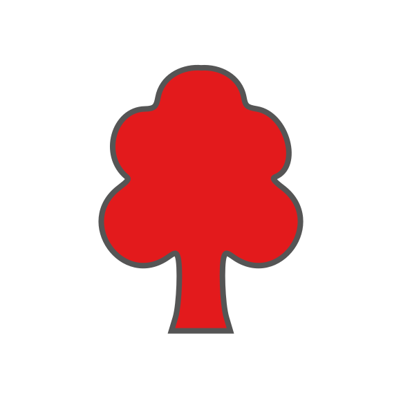
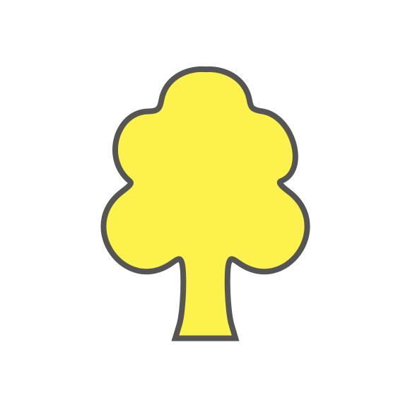
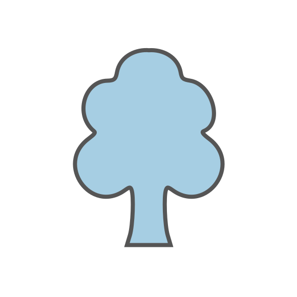
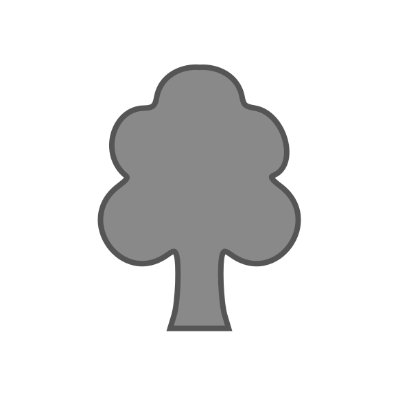
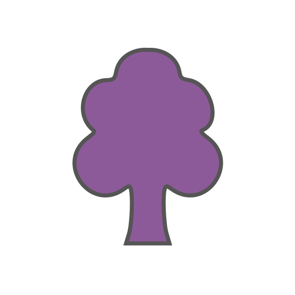

<!doctype html>
<html lang="en">
    <head>
        <meta charset="utf-8">
        <meta http-equiv="X-UA-Compatible" content="IE=edge">
        <meta name="viewport" content="initial-scale=1,user-scalable=no,maximum-scale=1,width=device-width">
        <meta name="mobile-web-app-capable" content="yes">
        <meta name="apple-mobile-web-app-capable" content="yes">
        <link rel="stylesheet" href="css/leaflet.css">
        <link rel="stylesheet" href="css/L.Control.Layers.Tree.css">
        <link rel="stylesheet" href="css/qgis2web.css">
        <link rel="stylesheet" href="css/fontawesome-all.min.css">
        <link rel="stylesheet" href="css/leaflet.photon.css">
        
        <style id="rewild-responsive-map">
            html,
            body {
                width: 100%;
                height: 100%;
                margin: 0;
                padding: 0;
                overflow: hidden;
            }

            #map {
                width: 100% !important;
                height: 100% !important;
                min-height: 100%;
                margin: 0;
                padding: 0;
            }
        </style>

        <title>Rewild Wicklow Projects</title>
    
        <style id="rewild-site-popup-styles">
            .rw-site-leaflet-popup .leaflet-popup-content-wrapper {
                border-radius: 14px;
                border: 1px solid #dce7d8;
                box-shadow: 0 12px 32px rgba(47, 74, 42, 0.22);
            }
            .rw-site-leaflet-popup .leaflet-popup-content { margin: 0; width: 350px !important; }
            .rw-site-popup { 
                width: 340px;
                box-sizing: border-box;
                padding: 18px 20px;
                color: #42563d;
                font-family: Arial, Helvetica, sans-serif;
                line-height: 1.5;
            }
            .rw-site-popup-kicker { margin-bottom: 3px; color: #82907d; font-size: 10px; font-weight: 700; letter-spacing: 0.09em; text-transform: uppercase; }
            .rw-site-popup-title { color: #35552f; font-size: 18px; font-weight: 750; line-height: 1.2; }
            .rw-site-popup-tag { display: inline-block; margin-top: 8px; padding: 4px 8px; border-radius: 999px; background: #edf4e9; color: #587050; font-size: 11px; font-weight: 700; }
            .rw-site-popup-description { margin-top: 11px; font-size: 13px; white-space: pre-line; }
            .rw-site-popup-grid { display: grid; gap: 7px; margin-top: 13px; padding-top: 11px; border-top: 1px solid #e5ece2; font-size: 12px; }
            .rw-site-popup-grid div { display: grid; grid-template-columns: 105px 1fr; gap: 8px; }
            .rw-site-popup-grid span { color: #7b8d76; font-weight: 700; }
            .rw-site-popup-note { margin-top: 12px; color: #81907d; font-size: 10.5px; font-style: italic; }
        </style>

    
    <style id="rewild-legend-styles">

    /* Overall legend */
    .leaflet-control-layers {
        font-size: 13px;
        margin-top: 1px !important;
    }

    /* Legend contents */
    .leaflet-control-layers-list {
        font-size: 13px;
    }
    
    /* Layer names */
    .leaflet-control-layers label {
        font-size: 13px;
    }

    /* Nested tree entries */
    .leaflet-layerstree-header-name,
    .leaflet-layerstree-node-label {
        font-size: 12px !important;
    }

    /* Legend icons */
    .leaflet-control-layers img {
        width: 14px !important;
        height: 14px !important;
        margin-right: 4px;
        vertical-align: middle;
    }

    /* Checkboxes */
    .leaflet-control-layers-selector {
        transform: scale(0.85);
        margin-right: 4px;
    }


    .leaflet-control-layers-expanded {
        width: 255px;
    }

    /* Reduce spacing */
    .leaflet-control-layers-overlays label {
        margin-bottom: 3px;
    }

    </style>
    

        <style>
            .rw-hover-tooltip {
                padding: 0;
                border: 1px solid #d4e2d0;
                border-radius: 8px;
                background: rgba(255, 255, 255, 0.98);
                color: #405b39;
                box-shadow:
                    0 4px 14px
                    rgba(44, 72, 40, 0.18);
                font-family:
                    Arial,
                    Helvetica,
                    sans-serif;
            }

            .rw-hover-tooltip::before {
                border-top-color:
                    rgba(255, 255, 255, 0.98);
            }

            .rw-hover-card {
                box-sizing: border-box;
                min-width: 210px;
                max-width: 360px;
                padding: 10px 12px;
                line-height: 1.35;
            }

            .rw-hover-title {
                margin-bottom: 7px;
                color: #35552f;
                font-size: 15px;
                font-weight: 700;
            }

            .rw-hover-row {
                display: grid;
                grid-template-columns: 82px 1fr;
                gap: 7px;
                margin-top: 4px;
                font-size: 12px;
            }

            .rw-hover-label {
                color: #6e8567;
                font-weight: 600;
            }

            .rw-hover-hint {
                margin-top: 8px;
                padding-top: 7px;
                border-top: 1px solid #e5ece2;
                color: #788a73;
                font-size: 11px;
                font-style: italic;
            }
        </style>

    </head>
    <body>
        <div id="map">
        </div>
        <script src="js/qgis2web_expressions.js"></script>
        <script src="js/leaflet.js"></script>
        <script src="js/L.Control.Layers.Tree.min.js"></script>
        <script src="js/leaflet.rotatedMarker.js"></script>
        <script src="js/leaflet.pattern.js"></script>
        <script src="js/leaflet-hash.js"></script>
        <script src="js/Autolinker.min.js"></script>
        <script src="js/leaflet.photon.js"></script>
        <script src="data/WicklowMountainsNationalPark_0.js"></script>
        <script src="data/CountyWicklow_1.js"></script>
        <script src="data/Sites_2.js"></script>
        <script src="data/Plantings_3.js"></script>
        <script>
        
        var map = L.map('map', {
            zoomControl: false,
            maxZoom: 20,
            minZoom: 1
        });

        var rewildInitialBounds = L.latLngBounds(
            [52.64062730567451, -7.0611765937028785],
            [53.282235869183104, -5.799805104021357]
        );

        map.fitBounds(rewildInitialBounds, {
            padding: [24, 24],
            animate: false
        });
        /*
         * Do not restore a previous map zoom from the URL hash.
         * Clear any stale qgis2web map fragment without reloading the page.
         */
        if (window.location.hash) {
            window.history.replaceState(
                null,
                document.title,
                window.location.pathname + window.location.search
            );
        }

        
        /*
         * Leaflet may initialise before the iframe has its final dimensions.
         * Recalculate the map size and reapply the overview after layout.
         */
        function resetRewildMapView() {
            map.invalidateSize(false);
            map.fitBounds(rewildInitialBounds, {
                padding: [24, 24],
                animate: false
            });
        }

        window.addEventListener('load', function() {
            window.setTimeout(resetRewildMapView, 0);
            window.setTimeout(resetRewildMapView, 150);
            window.setTimeout(resetRewildMapView, 500);
        });

        window.addEventListener('resize', function() {
            map.invalidateSize(false);
        });

        map.attributionControl.setPrefix('<a href="https://github.com/qgis2web/qgis2web" target="_blank">qgis2web</a> &middot; <a href="https://leafletjs.com" title="A JS library for interactive maps">Leaflet</a> &middot; <a href="https://qgis.org">QGIS</a>');
        var autolinker = new Autolinker({truncate: {length: 30, location: 'smart'}});
        // remove popup's row if "visible-with-data"
        function removeEmptyRowsFromPopupContent(content, feature) {
         var tempDiv = document.createElement('div');
         tempDiv.innerHTML = content;
         var rows = tempDiv.querySelectorAll('tr');
         for (var i = 0; i < rows.length; i++) {
             var td = rows[i].querySelector('td.visible-with-data');
             var key = td ? td.id : '';
             if (td && td.classList.contains('visible-with-data') && feature.properties[key] == null) {
                 rows[i].parentNode.removeChild(rows[i]);
             }
         }
         return tempDiv.innerHTML;
        }
        // modify popup if contains media
        function addClassToPopupIfMedia(content, popup) {
            var tempDiv = document.createElement('div');
            tempDiv.innerHTML = content;
            var imgTd = tempDiv.querySelector('td img');
            if (imgTd) {
                var src = imgTd.getAttribute('src');
                if (/\.(jpg|jpeg|png|gif|bmp|webp|avif)$/i.test(src)) {
                    popup._contentNode.classList.add('media');
                    setTimeout(function() {
                        popup.update();
                    }, 10);
                } else if (/\.(mp3|wav|ogg|aac)$/i.test(src)) {
                    var audio = document.createElement('audio');
                    audio.controls = true;
                    audio.src = src;
                    imgTd.parentNode.replaceChild(audio, imgTd);
                    popup._contentNode.classList.add('media');
                    setTimeout(function() {
                        popup.setContent(tempDiv.innerHTML);
                        popup.update();
                    }, 10);
                } else if (/\.(mp4|webm|ogg|mov)$/i.test(src)) {
                    var video = document.createElement('video');
                    video.controls = true;
                    video.src = src;
                    video.style.width = "400px";
                    video.style.height = "300px";
                    video.style.maxHeight = "60vh";
                    video.style.maxWidth = "60vw";
                    imgTd.parentNode.replaceChild(video, imgTd);
                    popup._contentNode.classList.add('media');
                    // Aggiorna il popup quando il video carica i metadati
                    video.addEventListener('loadedmetadata', function() {
                        popup.update();
                    });
                    setTimeout(function() {
                        popup.setContent(tempDiv.innerHTML);
                        popup.update();
                    }, 10);
                } else {
                    popup._contentNode.classList.remove('media');
                }
            } else {
                popup._contentNode.classList.remove('media');
            }
        }
        
        function escapeHoverText(value) {
            if (value === null || value === undefined) {
                return '';
            }

            return String(value)
                .replace(/&/g, '&amp;')
                .replace(/</g, '&lt;')
                .replace(/>/g, '&gt;')
                .replace(/"/g, '&quot;')
                .replace(/'/g, '&#039;');
        }

        function formatHoverDate(value) {
            if (!value) {
                return '';
            }

            var parts = String(value).split('-');

            if (parts.length !== 3) {
                return escapeHoverText(value);
            }

            var date = new Date(
                Number(parts[0]),
                Number(parts[1]) - 1,
                Number(parts[2])
            );

            if (isNaN(date.getTime())) {
                return escapeHoverText(value);
            }

            return date.toLocaleDateString(
                'en-IE',
                {
                    day: 'numeric',
                    month: 'long',
                    year: 'numeric'
                }
            );
        }

        function titleCaseHoverText(value) {
            if (!value) {
                return '';
            }

            return String(value)
                .replace(/[-_]/g, ' ')
                .replace(
                    /\b\w/g,
                    function(letter) {
                        return letter.toUpperCase();
                    }
                );
        }

        var title = new L.Control({'position':'topright'});
        title.onAdd = function (map) {
            this._div = L.DomUtil.create('div', 'info');
            this.update();
            return this._div;
        };
        title.update = function () {
            this._div.innerHTML = '<h2>Rewild Wicklow Projects</h2>';
        };
        title.addTo(map);
        var zoomControl = L.control.zoom({
            position: 'topleft'
        }).addTo(map);
        var bounds_group = new L.featureGroup([]);

        map.createPane('pane_Basemap_0');
        map.getPane('pane_Basemap_0').style.zIndex = 200;

        var layer_Basemap_0 = L.tileLayer('https://{s}.tile.opentopomap.org/{z}/{x}/{y}.png', {
            pane: 'pane_Basemap_0',
            opacity: 1.0,
            attribution: 'Map data © OpenStreetMap contributors, SRTM | Map style © OpenTopoMap',
            minZoom: 1,
            maxZoom: 17,
            minNativeZoom: 0,
            maxNativeZoom: 17
        });

        map.addLayer(layer_Basemap_0);

        function setBounds() {
        }
        function pop_WicklowMountainsNationalPark_0(feature, layer) {
            var popupContent = '<table>\
                    <tr>\
                        <td colspan="2">' + (feature.properties['fid'] !== null ? autolinker.link(String(feature.properties['fid']).replace(/'/g, '\'').toLocaleString()) : '') + '</td>\
                    </tr>\
                    <tr>\
                        <td colspan="2">' + (feature.properties['SITECODE'] !== null ? autolinker.link(String(feature.properties['SITECODE']).replace(/'/g, '\'').toLocaleString()) : '') + '</td>\
                    </tr>\
                    <tr>\
                        <td colspan="2">' + (feature.properties['DESIG'] !== null ? autolinker.link(String(feature.properties['DESIG']).replace(/'/g, '\'').toLocaleString()) : '') + '</td>\
                    </tr>\
                    <tr>\
                        <td colspan="2">' + (feature.properties['SITE_NAME'] !== null ? autolinker.link(String(feature.properties['SITE_NAME']).replace(/'/g, '\'').toLocaleString()) : '') + '</td>\
                    </tr>\
                    <tr>\
                        <td colspan="2">' + (feature.properties['Ver'] !== null ? autolinker.link(String(feature.properties['Ver']).replace(/'/g, '\'').toLocaleString()) : '') + '</td>\
                    </tr>\
                    <tr>\
                        <td colspan="2">' + (feature.properties['created_us'] !== null ? autolinker.link(String(feature.properties['created_us']).replace(/'/g, '\'').toLocaleString()) : '') + '</td>\
                    </tr>\
                    <tr>\
                        <td colspan="2">' + (feature.properties['created_da'] !== null ? autolinker.link(String(feature.properties['created_da']).replace(/'/g, '\'').toLocaleString()) : '') + '</td>\
                    </tr>\
                    <tr>\
                        <td colspan="2">' + (feature.properties['last_edite'] !== null ? autolinker.link(String(feature.properties['last_edite']).replace(/'/g, '\'').toLocaleString()) : '') + '</td>\
                    </tr>\
                    <tr>\
                        <td colspan="2">' + (feature.properties['last_edi_1'] !== null ? autolinker.link(String(feature.properties['last_edi_1']).replace(/'/g, '\'').toLocaleString()) : '') + '</td>\
                    </tr>\
                    <tr>\
                        <td colspan="2">' + (feature.properties['SHAPE_Leng'] !== null ? autolinker.link(String(feature.properties['SHAPE_Leng']).replace(/'/g, '\'').toLocaleString()) : '') + '</td>\
                    </tr>\
                    <tr>\
                        <td colspan="2">' + (feature.properties['SHAPE_Area'] !== null ? autolinker.link(String(feature.properties['SHAPE_Area']).replace(/'/g, '\'').toLocaleString()) : '') + '</td>\
                    </tr>\
                    <tr>\
                        <td colspan="2">' + (feature.properties['InPoly_FID'] !== null ? autolinker.link(String(feature.properties['InPoly_FID']).replace(/'/g, '\'').toLocaleString()) : '') + '</td>\
                    </tr>\
                    <tr>\
                        <td colspan="2">' + (feature.properties['SimPgnFlag'] !== null ? autolinker.link(String(feature.properties['SimPgnFlag']).replace(/'/g, '\'').toLocaleString()) : '') + '</td>\
                    </tr>\
                    <tr>\
                        <td colspan="2">' + (feature.properties['MaxSimpTol'] !== null ? autolinker.link(String(feature.properties['MaxSimpTol']).replace(/'/g, '\'').toLocaleString()) : '') + '</td>\
                    </tr>\
                    <tr>\
                        <td colspan="2">' + (feature.properties['MinSimpTol'] !== null ? autolinker.link(String(feature.properties['MinSimpTol']).replace(/'/g, '\'').toLocaleString()) : '') + '</td>\
                    </tr>\
                </table>';
            var content = removeEmptyRowsFromPopupContent(popupContent, feature);
			layer.on('popupopen', function(e) {
				addClassToPopupIfMedia(content, e.popup);
			});
			layer.bindPopup(content, { maxHeight: 400 });
        }

        function style_WicklowMountainsNationalPark_0_0() {
            return {
                pane: 'pane_WicklowMountainsNationalPark_0',
                interactive: false,
            }
        }
        map.createPane('pane_WicklowMountainsNationalPark_0');
        map.getPane('pane_WicklowMountainsNationalPark_0').style.zIndex = 400;
        map.getPane('pane_WicklowMountainsNationalPark_0').style['mix-blend-mode'] = 'normal';
        var layer_WicklowMountainsNationalPark_0 = new L.geoJson(json_WicklowMountainsNationalPark_0, {
            attribution: '',
            interactive: false,
            dataVar: 'json_WicklowMountainsNationalPark_0',
            layerName: 'layer_WicklowMountainsNationalPark_0',
            pane: 'pane_WicklowMountainsNationalPark_0',
            style: style_WicklowMountainsNationalPark_0_0,
        });
        bounds_group.addLayer(layer_WicklowMountainsNationalPark_0);
        map.addLayer(layer_WicklowMountainsNationalPark_0);
        function pop_CountyWicklow_1(feature, layer) {
            var popupContent = '<table>\
                    <tr>\
                        <td colspan="2">' + (feature.properties['fid'] !== null ? autolinker.link(String(feature.properties['fid']).replace(/'/g, '\'').toLocaleString()) : '') + '</td>\
                    </tr>\
                    <tr>\
                        <td colspan="2">' + (feature.properties['OBJECTID'] !== null ? autolinker.link(String(feature.properties['OBJECTID']).replace(/'/g, '\'').toLocaleString()) : '') + '</td>\
                    </tr>\
                    <tr>\
                        <td colspan="2">' + (feature.properties['CO_ID'] !== null ? autolinker.link(String(feature.properties['CO_ID']).replace(/'/g, '\'').toLocaleString()) : '') + '</td>\
                    </tr>\
                    <tr>\
                        <td colspan="2">' + (feature.properties['ENGLISH'] !== null ? autolinker.link(String(feature.properties['ENGLISH']).replace(/'/g, '\'').toLocaleString()) : '') + '</td>\
                    </tr>\
                    <tr>\
                        <td colspan="2">' + (feature.properties['GAEILGE'] !== null ? autolinker.link(String(feature.properties['GAEILGE']).replace(/'/g, '\'').toLocaleString()) : '') + '</td>\
                    </tr>\
                    <tr>\
                        <td colspan="2">' + (feature.properties['LOGAINM_ID'] !== null ? autolinker.link(String(feature.properties['LOGAINM_ID']).replace(/'/g, '\'').toLocaleString()) : '') + '</td>\
                    </tr>\
                    <tr>\
                        <td colspan="2">' + (feature.properties['GUID'] !== null ? autolinker.link(String(feature.properties['GUID']).replace(/'/g, '\'').toLocaleString()) : '') + '</td>\
                    </tr>\
                    <tr>\
                        <td colspan="2">' + (feature.properties['CONTAE'] !== null ? autolinker.link(String(feature.properties['CONTAE']).replace(/'/g, '\'').toLocaleString()) : '') + '</td>\
                    </tr>\
                    <tr>\
                        <td colspan="2">' + (feature.properties['COUNTY'] !== null ? autolinker.link(String(feature.properties['COUNTY']).replace(/'/g, '\'').toLocaleString()) : '') + '</td>\
                    </tr>\
                    <tr>\
                        <td colspan="2">' + (feature.properties['PROVINCE'] !== null ? autolinker.link(String(feature.properties['PROVINCE']).replace(/'/g, '\'').toLocaleString()) : '') + '</td>\
                    </tr>\
                    <tr>\
                        <td colspan="2">' + (feature.properties['CENTROID_X'] !== null ? autolinker.link(String(feature.properties['CENTROID_X']).replace(/'/g, '\'').toLocaleString()) : '') + '</td>\
                    </tr>\
                    <tr>\
                        <td colspan="2">' + (feature.properties['CENTROID_Y'] !== null ? autolinker.link(String(feature.properties['CENTROID_Y']).replace(/'/g, '\'').toLocaleString()) : '') + '</td>\
                    </tr>\
                    <tr>\
                        <td colspan="2">' + (feature.properties['AREA'] !== null ? autolinker.link(String(feature.properties['AREA']).replace(/'/g, '\'').toLocaleString()) : '') + '</td>\
                    </tr>\
                </table>';
            var content = removeEmptyRowsFromPopupContent(popupContent, feature);
			layer.on('popupopen', function(e) {
				addClassToPopupIfMedia(content, e.popup);
			});
			layer.bindPopup(content, { maxHeight: 400 });
        }

        function style_CountyWicklow_1_0() {
            return {
                pane: 'pane_CountyWicklow_1',
                opacity: 1,
                color: 'rgba(159,203,152,1.0)',
                dashArray: '',
                lineCap: 'round',
                lineJoin: 'round',
                weight: 2.0,
                fillOpacity: 0,
                interactive: false,
            }
        }
        map.createPane('pane_CountyWicklow_1');
        map.getPane('pane_CountyWicklow_1').style.zIndex = 401;
        map.getPane('pane_CountyWicklow_1').style['mix-blend-mode'] = 'normal';
        var layer_CountyWicklow_1 = new L.geoJson(json_CountyWicklow_1, {
            attribution: '',
            interactive: false,
            dataVar: 'json_CountyWicklow_1',
            layerName: 'layer_CountyWicklow_1',
            pane: 'pane_CountyWicklow_1',
            style: style_CountyWicklow_1_0,
        });
        bounds_group.addLayer(layer_CountyWicklow_1);
        map.addLayer(layer_CountyWicklow_1);
        function pop_Sites_2(feature, layer) {

            layer.on('click', function() {
                var message = {
                    source: 'rewild-qgis-map',
                    featureType: 'site',
                    properties: feature.properties,
                    sentAt: Date.now()
                };

                console.log(
                    'Sending site selection to Dash:',
                    message
                );

                /*
                 * Update the Dash Store directly. postMessage() by itself
                 * does not change a dcc.Store unless the parent page has a
                 * separate message listener. Because this iframe is served
                 * by the same Dash application, set_props() is the most
                 * reliable bridge.
                 */
                try {
                    if (
                        window.parent
                        && window.parent.dash_clientside
                        && typeof window.parent.dash_clientside.set_props
                            === 'function'
                    ) {
                        window.parent.dash_clientside.set_props(
                            'selected-map-feature',
                            {data: message}
                        );
                    }
                } catch (error) {
                    console.warn(
                        'Could not update the Dash feature store directly:',
                        error
                    );
                }

                /* Retain postMessage as a compatibility fallback. */
                window.parent.postMessage(
                    message,
                    '*'
                );
            });


            var siteProperties = feature.properties || {};

            var siteName = escapeHoverText(
                siteProperties['Name'] || 'Unnamed site'
            );

            var siteActivity = titleCaseHoverText(
                siteProperties['Activity Type']
            );

            var managementType = String(
                siteProperties['Management Type'] || ''
            ).trim().toLowerCase();

            var managementLabels = {
                regular: 'Regular visits from ReWild Wicklow',
                sporadic: 'Sporadic visits; monitored locally',
                annual: 'Annual visit; maintained locally',
                never: 'No visits required'
            };

            var siteManagement = escapeHoverText(
                managementLabels[managementType]
                || 'Management schedule undetermined'
            );

            var siteLocalGroup = escapeHoverText(
                siteProperties['Local Group']
            );

            var siteLastVisited = formatHoverDate(
                siteProperties['last_visited']
            );

            var siteHoverContent =
                '<div class="rw-hover-card">' +

                    '<div class="rw-hover-title">' +
                        siteName +
                    '</div>' +

                    (
                        siteActivity
                            ? '<div class="rw-hover-row">' +
                                '<span class="rw-hover-label">' +
                                    'Activity' +
                                '</span>' +
                                '<span>' +
                                    escapeHoverText(siteActivity) +
                                '</span>' +
                              '</div>'
                            : ''
                    ) +

                    '<div class="rw-hover-row">' +
                        '<span class="rw-hover-label">' +
                            'Management' +
                        '</span>' +
                        '<span>' +
                            siteManagement +
                        '</span>' +
                    '</div>' +

                    (
                        siteLocalGroup
                            ? '<div class="rw-hover-row">' +
                                '<span class="rw-hover-label">' +
                                    'Local group' +
                                '</span>' +
                                '<span>' +
                                    siteLocalGroup +
                                '</span>' +
                              '</div>'
                            : ''
                    ) +

                    (
                        siteLastVisited
                            ? '<div class="rw-hover-row">' +
                                '<span class="rw-hover-label">' +
                                    'Last visited' +
                                '</span>' +
                                '<span>' +
                                    siteLastVisited +
                                '</span>' +
                              '</div>'
                            : ''
                    ) +

                    '<div class="rw-hover-hint">' +
                        'Click for full details' +
                    '</div>' +

                '</div>';

            layer.bindTooltip(
                siteHoverContent,
                {
                    permanent: false,
                    direction: 'top',
                    offset: [0, -12],
                    opacity: 0.98,
                    className: 'rw-hover-tooltip'
                }
            );

            var popupContent = '<table>\
                    <tr>\
                        <td colspan="2">' + (feature.properties['Name'] !== null ? autolinker.link(String(feature.properties['Name']).replace(/'/g, '\'').toLocaleString()) : '') + '</td>\
                    </tr>\
                    <tr>\
                        <td colspan="2">' + (feature.properties['Description'] !== null ? autolinker.link(String(feature.properties['Description']).replace(/'/g, '\'').toLocaleString()) : '') + '</td>\
                    </tr>\
                    <tr>\
                        <td colspan="2">' + (feature.properties['Local Group'] !== null ? autolinker.link(String(feature.properties['Local Group']).replace(/'/g, '\'').toLocaleString()) : '') + '</td>\
                    </tr>\
                    <tr>\
                        <td colspan="2">' + (feature.properties['Contact'] !== null ? autolinker.link(String(feature.properties['Contact']).replace(/'/g, '\'').toLocaleString()) : '') + '</td>\
                    </tr>\
                    <tr>\
                        <td colspan="2">' + (feature.properties['Date of First Activity'] !== null ? autolinker.link(String(feature.properties['Date of First Activity']).replace(/'/g, '\'').toLocaleString()) : '') + '</td>\
                    </tr>\
                    <tr>\
                        <td colspan="2">' + (feature.properties['Management Type'] !== null ? autolinker.link(String(feature.properties['Management Type']).replace(/'/g, '\'').toLocaleString()) : '') + '</td>\
                    </tr>\
                    <tr>\
                        <td colspan="2">' + (feature.properties['Access Info'] !== null ? autolinker.link(String(feature.properties['Access Info']).replace(/'/g, '\'').toLocaleString()) : '') + '</td>\
                    </tr>\
                    <tr>\
                        <td colspan="2">' + (feature.properties['Has Section 42'] !== null ? autolinker.link(String(feature.properties['Has Section 42']).replace(/'/g, '\'').toLocaleString()) : '') + '</td>\
                    </tr>\
                    <tr>\
                        <td colspan="2">' + (feature.properties['Section 42 Notes'] !== null ? autolinker.link(String(feature.properties['Section 42 Notes']).replace(/'/g, '\'').toLocaleString()) : '') + '</td>\
                    </tr>\
                    <tr>\
                        <td colspan="2">' + (feature.properties['ReWild Caretakers'] !== null ? autolinker.link(String(feature.properties['ReWild Caretakers']).replace(/'/g, '\'').toLocaleString()) : '') + '</td>\
                    </tr>\
                    <tr>\
                        <td colspan="2">' + (feature.properties['Folio Number'] !== null ? autolinker.link(String(feature.properties['Folio Number']).replace(/'/g, '\'').toLocaleString()) : '') + '</td>\
                    </tr>\
                    <tr>\
                        <td colspan="2">' + (feature.properties['Rewild Site Code'] !== null ? autolinker.link(String(feature.properties['Rewild Site Code']).replace(/'/g, '\'').toLocaleString()) : '') + '</td>\
                    </tr>\
                    <tr>\
                        <td colspan="2">' + (feature.properties['Activity Type'] !== null ? autolinker.link(String(feature.properties['Activity Type']).replace(/'/g, '\'').toLocaleString()) : '') + '</td>\
                    </tr>\
                    <tr>\
                        <td colspan="2">' + (feature.properties['Deer Manager'] !== null ? autolinker.link(String(feature.properties['Deer Manager']).replace(/'/g, '\'').toLocaleString()) : '') + '</td>\
                    </tr>\
                    <tr>\
                        <td colspan="2">' + (feature.properties['documents_url'] !== null ? autolinker.link(String(feature.properties['documents_url']).replace(/'/g, '\'').toLocaleString()) : '') + '</td>\
                    </tr>\
                    <tr>\
                        <td colspan="2">' + (feature.properties['deer_returns_url'] !== null ? autolinker.link(String(feature.properties['deer_returns_url']).replace(/'/g, '\'').toLocaleString()) : '') + '</td>\
                    </tr>\
                    <tr>\
                        <td colspan="2">' + (feature.properties['last_visited'] !== null ? autolinker.link(String(feature.properties['last_visited']).replace(/'/g, '\'').toLocaleString()) : '') + '</td>\
                    </tr>\
                    <tr>\
                        <td colspan="2">' + (feature.properties['formatted_deer_returns_url'] !== null ? autolinker.link(String(feature.properties['formatted_deer_returns_url']).replace(/'/g, '\'').toLocaleString()) : '') + '</td>\
                    </tr>\
                    <tr>\
                        <td colspan="2">' + (feature.properties['formatted_documents_url'] !== null ? autolinker.link(String(feature.properties['formatted_documents_url']).replace(/'/g, '\'').toLocaleString()) : '') + '</td>\
                    </tr>\
                    <tr>\
                        <td colspan="2">' + (feature.properties['display_name'] !== null ? autolinker.link(String(feature.properties['display_name']).replace(/'/g, '\'').toLocaleString()) : '') + '</td>\
                    </tr>\
                </table>';
            var content = removeEmptyRowsFromPopupContent(popupContent, feature);
			layer.on('popupopen', function(e) {
				addClassToPopupIfMedia(content, e.popup);
			});
			layer.bindPopup(content, { maxHeight: 400 });

            var publicSite = feature.properties || {};
            var publicSiteName = escapeHoverText(
                publicSite['display_name'] || publicSite['Name'] || 'ReWild Wicklow site'
            );
            var publicActivity = titleCaseHoverText(publicSite['Activity Type']);
            var publicDescription = escapeHoverText(publicSite['Description']);
            var publicPartner = escapeHoverText(publicSite['Local Group']);
            var publicFirstActivity = formatHoverDate(publicSite['Date of First Activity']);
            var publicLastVisited = formatHoverDate(publicSite['last_visited']);

            var publicPopupContent =
                '<div class="rw-site-popup">' +
                    '<div class="rw-site-popup-kicker">ReWild Wicklow site</div>' +
                    '<div class="rw-site-popup-title">' + publicSiteName + '</div>' +
                    (publicActivity ? '<div class="rw-site-popup-tag">' + escapeHoverText(publicActivity) + '</div>' : '') +
                    (publicDescription ? '<div class="rw-site-popup-description">' + publicDescription + '</div>' : '') +
                    '<div class="rw-site-popup-grid">' +
                        (publicPartner ? '<div><span>Working with</span>' + publicPartner + '</div>' : '') +
                        (publicFirstActivity ? '<div><span>Active since</span>' + publicFirstActivity + '</div>' : '') +
                        (publicLastVisited ? '<div><span>Latest visit</span>' + publicLastVisited + '</div>' : '') +
                    '</div>' +
                    '<div class="rw-site-popup-note">Private contact, access and land records are not shown.</div>' +
                '</div>';

            layer.unbindPopup();
            layer.bindPopup(publicPopupContent, {
                maxWidth: 340,
                minWidth: 250,
                className: 'rw-site-leaflet-popup'
            });

        }
        function style_Sites_2_0(feature) {
            var managementType = String(feature.properties['Management Type'] || '').trim().toLowerCase();

            var iconFile = {
                'regular': 'tree_red.svg',
                'sporadic': 'tree_yellow.svg',
                'annual': 'tree_light_blue.svg',
                'never': 'tree_gray.svg',
                '': 'tree_purple.svg',
                'null': 'tree_purple.svg',
                'undefined': 'tree_purple.svg'
            }[managementType] || 'tree_purple.svg';

            return {
                pane: 'pane_Sites_2',
                rotationAngle: 0.0,
                rotationOrigin: 'center center',
                icon: L.icon({
                    iconUrl: 'markers/' + iconFile,
                    iconSize: [19.0, 19.0],
                    iconAnchor: [9.5, 9.5],
                    popupAnchor: [0, -9.5]
                }),
                interactive: true,
            };
        }

        map.createPane('pane_Sites_2');
        map.getPane('pane_Sites_2').style.zIndex = 402;
        map.getPane('pane_Sites_2').style['mix-blend-mode'] = 'normal';
        var layer_Sites_2 = new L.geoJson(json_Sites_2, {
            attribution: '',
            interactive: true,
            dataVar: 'json_Sites_2',
            layerName: 'layer_Sites_2',
            pane: 'pane_Sites_2',
            onEachFeature: pop_Sites_2,
            pointToLayer: function (feature, latlng) {
                var context = {
                    feature: feature,
                    variables: {}
                };
                return L.marker(latlng, style_Sites_2_0(feature));
            },
        });
        bounds_group.addLayer(layer_Sites_2);
        map.addLayer(layer_Sites_2);
        function pop_Plantings_3(feature, layer) {

            
            layer.on('click', function() {
                var message = {
                    source: 'rewild-qgis-map',
                    featureType: 'planting',
                    properties: feature.properties,
                    sentAt: Date.now()
                };

                /*
                 * Keep the compact planting tooltip visible instead of
                 * opening qgis2web's full table popup.
                 */
                if (typeof layer.closePopup === 'function') {
                    layer.closePopup();
                }

                if (typeof layer.openTooltip === 'function') {
                    layer.openTooltip();
                }

                console.log(
                    'Sending planting selection to Dash:',
                    message
                );

                /*
                 * Send the selected properties directly into the Dash
                 * dcc.Store so the detailed panel callback runs.
                 */
                try {
                    if (
                        window.parent
                        && window.parent.dash_clientside
                        && typeof window.parent.dash_clientside.set_props
                            === 'function'
                    ) {
                        window.parent.dash_clientside.set_props(
                            'selected-map-feature',
                            {data: message}
                        );
                    }
                } catch (error) {
                    console.warn(
                        'Could not update the Dash feature store directly:',
                        error
                    );
                }

                /* Retain postMessage as a compatibility fallback. */
                window.parent.postMessage(
                    message,
                    '*'
                );

                /*
                 * The map iframe and Dash page are served from the same
                 * application, so scroll directly to the detail panel.
                 * The postMessage fallback also lets parent-side code handle
                 * this later if the hosting arrangement changes.
                 */
                window.parent.postMessage(
                    {
                        source: 'rewild-qgis-map',
                        action: 'scroll-to-project-details'
                    },
                    '*'
                );

                window.setTimeout(
                    function() {
                        try {
                            var detailPanel =
                                window.parent.document.getElementById(
                                    'project-detail-panel'
                                );

                            if (detailPanel) {
                                detailPanel.scrollIntoView({
                                    behavior: 'smooth',
                                    block: 'start'
                                });
                            }
                        } catch (error) {
                            console.warn(
                                'Could not scroll parent page to details:',
                                error
                            );
                        }
                    },
                    100
                );
            });


            var plantingProperties = feature.properties || {};

            var plantingName = escapeHoverText(
                plantingProperties['Name'] || 'Unnamed planting'
            );

            var plantingProtection = titleCaseHoverText(
                plantingProperties['Protection']
            );

            var plantingLastVisited = formatHoverDate(
                plantingProperties['last_visited']
            );

            var plantingHoverContent =
                '<div class="rw-hover-card">' +

                    '<div class="rw-hover-title">' +
                        plantingName +
                    '</div>' +

                    (
                        plantingProtection
                            ? '<div class="rw-hover-row">' +
                                '<span class="rw-hover-label">' +
                                    'Protection' +
                                '</span>' +
                                '<span>' +
                                    escapeHoverText(
                                        plantingProtection
                                    ) +
                                '</span>' +
                              '</div>'
                            : ''
                    ) +

                    (
                        plantingLastVisited
                            ? '<div class="rw-hover-row">' +
                                '<span class="rw-hover-label">' +
                                    'Last visited' +
                                '</span>' +
                                '<span>' +
                                    plantingLastVisited +
                                '</span>' +
                              '</div>'
                            : ''
                    ) +

                    '<div class="rw-hover-hint">' +
                        'Click for full details' +
                    '</div>' +

                '</div>';

            layer.bindTooltip(
                plantingHoverContent,
                {
                    permanent: false,
                    sticky: true,
                    direction: 'top',
                    opacity: 0.98,
                    className: 'rw-hover-tooltip'
                }
            );

            var popupContent = '<table>\
                    <tr>\
                        <td colspan="2">' + (feature.properties['Name'] !== null ? autolinker.link(String(feature.properties['Name']).replace(/'/g, '\'').toLocaleString()) : '') + '</td>\
                    </tr>\
                    <tr>\
                        <td colspan="2">' + (feature.properties['Photo'] !== null ? '' : '') + '</td>\
                    </tr>\
                    <tr>\
                        <td colspan="2">' + (feature.properties['Protection'] !== null ? autolinker.link(String(feature.properties['Protection']).replace(/'/g, '\'').toLocaleString()) : '') + '</td>\
                    </tr>\
                    <tr>\
                        <td colspan="2">' + (feature.properties['Site'] !== null ? autolinker.link(String(feature.properties['Site']).replace(/'/g, '\'').toLocaleString()) : '') + '</td>\
                    </tr>\
                    <tr>\
                        <td colspan="2">' + (feature.properties['Description'] !== null ? autolinker.link(String(feature.properties['Description']).replace(/'/g, '\'').toLocaleString()) : '') + '</td>\
                    </tr>\
                    <tr>\
                        <td colspan="2">' + (feature.properties['First Planted'] !== null ? autolinker.link(String(feature.properties['First Planted']).replace(/'/g, '\'').toLocaleString()) : '') + '</td>\
                    </tr>\
                    <tr>\
                        <td colspan="2">' + (feature.properties['Maintained by RW'] !== null ? autolinker.link(String(feature.properties['Maintained by RW']).replace(/'/g, '\'').toLocaleString()) : '') + '</td>\
                    </tr>\
                    <tr>\
                        <td colspan="2">' + (feature.properties['Planted by RW'] !== null ? autolinker.link(String(feature.properties['Planted by RW']).replace(/'/g, '\'').toLocaleString()) : '') + '</td>\
                    </tr>\
                    <tr>\
                        <td colspan="2">' + (feature.properties['Rewild Planting Code'] !== null ? autolinker.link(String(feature.properties['Rewild Planting Code']).replace(/'/g, '\'').toLocaleString()) : '') + '</td>\
                    </tr>\
                    <tr>\
                        <td colspan="2">' + (feature.properties['Species Planted'] !== null ? autolinker.link(String(feature.properties['Species Planted']).replace(/'/g, '\'').toLocaleString()) : '') + '</td>\
                    </tr>\
                    <tr>\
                        <td colspan="2">' + (feature.properties['last_visited'] !== null ? autolinker.link(String(feature.properties['last_visited']).replace(/'/g, '\'').toLocaleString()) : '') + '</td>\
                    </tr>\
                </table>';
            var content = removeEmptyRowsFromPopupContent(popupContent, feature);

        }

        function style_Plantings_3_0(feature) {
            var protection = String(
                (feature.properties || {})['Protection'] || ''
            ).trim().toLowerCase();

            switch (protection) {
                case 'exclosure':
                    return {
                        pane: 'pane_planting_exclosure',
                        opacity: 1,
                        color: 'rgba(229,129,14,1.0)',
                        dashArray: '',
                        lineCap: 'round',
                        lineJoin: 'round',
                        weight: 2.0,
                        fillColor: 'rgba(229,129,14,1.0)',
                        fillOpacity: 0,
                        interactive: true
                    };

                case 'cages':
                    return {
                        pane: 'pane_planting_cages',
                        opacity: 1,
                        color: 'rgba(172,253,81,1.0)',
                        dashArray: '8.0,4.0',
                        lineCap: 'round',
                        lineJoin: 'round',
                        weight: 2.0,
                        fillColor: 'rgba(172,253,81,1.0)',
                        fillOpacity: 0,
                        interactive: true
                    };

                case 'tubes':
                    return {
                        pane: 'pane_planting_tubes',
                        opacity: 1,
                        color: 'rgba(141,90,153,1.0)',
                        dashArray: '8.0,4.0',
                        lineCap: 'round',
                        lineJoin: 'round',
                        weight: 2.0,
                        fillColor: 'rgba(141,90,153,1.0)',
                        fillOpacity: 0,
                        interactive: true
                    };

                case 'unprotected':
                default:
                    return {
                        pane: 'pane_planting_unprotected',
                        opacity: 1,
                        color: 'rgba(137,137,137,1.0)',
                        dashArray: '8.0,4.0',
                        lineCap: 'round',
                        lineJoin: 'round',
                        weight: 2.0,
                        fillColor: 'rgba(137,137,137,1.0)',
                        fillOpacity: 0,
                        interactive: true
                    };
            }
        }


        /*
         * Separate panes ensure smaller nested planting polygons remain
         * clickable even when they sit inside a larger planting polygon.
         */
        map.createPane('pane_planting_unprotected');
        map.getPane('pane_planting_unprotected').style.zIndex = 404;
        map.getPane('pane_planting_unprotected').style['mix-blend-mode'] = 'normal';

        map.createPane('pane_planting_tubes');
        map.getPane('pane_planting_tubes').style.zIndex = 405;
        map.getPane('pane_planting_tubes').style['mix-blend-mode'] = 'normal';

        map.createPane('pane_planting_cages');
        map.getPane('pane_planting_cages').style.zIndex = 406;
        map.getPane('pane_planting_cages').style['mix-blend-mode'] = 'normal';

        map.createPane('pane_planting_exclosure');
        map.getPane('pane_planting_exclosure').style.zIndex = 407;
        map.getPane('pane_planting_exclosure').style['mix-blend-mode'] = 'normal';

        var layer_Plantings_3 = new L.geoJson(json_Plantings_3, {
            attribution: '',
            interactive: true,
            dataVar: 'json_Plantings_3',
            layerName: 'layer_Plantings_3',
            onEachFeature: pop_Plantings_3,
            style: style_Plantings_3_0,
        });
        bounds_group.addLayer(layer_Plantings_3);
        map.addLayer(layer_Plantings_3);
        map.on("zoomend", function(e) {
            if (map.getZoom() <= 19 && map.getZoom() >= 13) {
                map.addLayer(layer_Plantings_3);
            } else if (map.getZoom() > 19 || map.getZoom() < 13) {
                map.addLayer(layer_Plantings_3);
            }
        });
            if (map.getZoom() <= 19 && map.getZoom() >= 13) {
                map.addLayer(layer_Plantings_3);
            } else if (map.getZoom() > 19 || map.getZoom() < 13) {
                map.addLayer(layer_Plantings_3);
            }
        var overlaysTree = [
            {label: 'Plantings<br /><table><tr><td style="text-align: center;"></td><td>An exclosure</td></tr><tr><td style="text-align: center;"></td><td>An area of Cages</td></tr><tr><td style="text-align: center;"></td><td>An area of Tubes</td></tr><tr><td style="text-align: center;"></td><td>No Protection</td></tr></table>', layer: layer_Plantings_3},
            {label: 'Sites<br /><table><tr><td style="text-align: center;"></td><td>Regular visits from RW</td></tr><tr><td style="text-align: center;"></td><td>Sporadic visits from RW, Monitored locally</td></tr><tr><td style="text-align: center;"></td><td>Annual visit from RW, Maintained Locally</td></tr><tr><td style="text-align: center;"></td><td>No visits required</td></tr><tr><td style="text-align: center;"></td><td>Undetermined</td></tr></table>', layer: layer_Sites_2},
            {label: ' County Wicklow', layer: layer_CountyWicklow_1},
        {label: '<b>External Datasets</b>',  selectAllCheckbox: true, children: [
            {label: ' Wicklow Mountains National Park', layer: layer_WicklowMountainsNationalPark_0},
            {label: 'OpenTopoMap', layer: layer_Basemap_0},
]},]
        var lay = L.control.layers.tree(null, overlaysTree,{
            //namedToggle: true,
            //selectorBack: false,
            //closedSymbol: '&#8862; &#x1f5c0;',
            //openedSymbol: '&#8863; &#x1f5c1;',
            //collapseAll: 'Collapse all',
            //expandAll: 'Expand all',
            collapsed: false, 
        });
        lay.addTo(map);
		document.addEventListener("DOMContentLoaded", function() {
            // set new Layers List height which considers toggle icon
            function newLayersListHeight() {
                var layerScrollbarElement = document.querySelector('.leaflet-control-layers-scrollbar');
                if (layerScrollbarElement) {
                    var layersListElement = document.querySelector('.leaflet-control-layers-list');
                    var originalHeight = layersListElement.style.height 
                        || window.getComputedStyle(layersListElement).height;
                    var newHeight = parseFloat(originalHeight) - 50;
                    layersListElement.style.height = newHeight + 'px';
                }
            }
            var isLayersListExpanded = true;
            var controlLayersElement = document.querySelector('.leaflet-control-layers');
            var toggleLayerControl = document.querySelector('.leaflet-control-layers-toggle');
            // toggle Collapsed/Expanded and apply new Layers List height
            toggleLayerControl.addEventListener('click', function() {
                if (isLayersListExpanded) {
                    controlLayersElement.classList.remove('leaflet-control-layers-expanded');
                } else {
                    controlLayersElement.classList.add('leaflet-control-layers-expanded');
                }
                isLayersListExpanded = !isLayersListExpanded;
                newLayersListHeight()
            });	
			// apply new Layers List height if toggle layerstree
			if (controlLayersElement) {
				controlLayersElement.addEventListener('click', function(event) {
					var toggleLayerHeaderPointer = event.target.closest('.leaflet-layerstree-header-pointer span');
					if (toggleLayerHeaderPointer) {
						newLayersListHeight();
					}
				});
			}
            // Collapsed/Expanded at Start to apply new height
            setTimeout(function() {
                toggleLayerControl.click();
            }, 10);
            setTimeout(function() {
                toggleLayerControl.click();
            }, 10);
            // Collapsed touch/small screen
            var isSmallScreen = window.innerWidth < 650;
            if (isSmallScreen) {
                setTimeout(function() {
                    controlLayersElement.classList.remove('leaflet-control-layers-expanded');
                    isLayersListExpanded = !isLayersListExpanded;
                }, 500);
            }  
        });       
        map.on("zoomend", function(){

                if (map.hasLayer(layer_Sites_2)) {
                    if (map.getZoom() <= 11 && map.getZoom() >= 19) {
                        layer_Sites_2.eachLayer(function (layer) {
                            layer.openTooltip();
                        });
                    } else {
                        layer_Sites_2.eachLayer(function (layer) {
                            layer.closeTooltip();
                        });
                    }
                }
                if (map.hasLayer(layer_Plantings_3)) {
                    if (map.getZoom() <= 16 && map.getZoom() >= 19) {
                        layer_Plantings_3.eachLayer(function (layer) {
                            layer.openTooltip();
                        });
                    } else {
                        layer_Plantings_3.eachLayer(function (layer) {
                            layer.closeTooltip();
                        });
                    }
                }
        });
        setBounds();
        var i = 0;
        layer_Sites_2.eachLayer(function(layer) {
            var context = {
                feature: layer.feature,
                variables: {}
            };
            
            labels.push(layer);
            totalMarkers += 1;
              layer.added = true;
              addLabel(layer, i);
              i++;
        });
        var i = 0;
        layer_Plantings_3.eachLayer(function(layer) {
            var context = {
                feature: layer.feature,
                variables: {}
            };
            
            labels.push(layer);
            totalMarkers += 1;
              layer.added = true;
              addLabel(layer, i);
              i++;
        });
                if (map.hasLayer(layer_Sites_2)) {
                    if (map.getZoom() <= 11 && map.getZoom() >= 19) {
                        layer_Sites_2.eachLayer(function (layer) {
                            layer.openTooltip();
                        });
                    } else {
                        layer_Sites_2.eachLayer(function (layer) {
                            layer.closeTooltip();
                        });
                    }
                }
                if (map.hasLayer(layer_Plantings_3)) {
                    if (map.getZoom() <= 16 && map.getZoom() >= 19) {
                        layer_Plantings_3.eachLayer(function (layer) {
                            layer.openTooltip();
                        });
                    } else {
                        layer_Plantings_3.eachLayer(function (layer) {
                            layer.closeTooltip();
                        });
                    }
                }
        /* qgis2web label reset removed */
        map.on("zoomend", function(){
            /* qgis2web label reset removed */
        });
        map.on("layeradd", function(){
            /* qgis2web label reset removed */
        });
        map.on("layerremove", function(){
            /* qgis2web label reset removed */
        });
        </script>
    </body>
</html>
